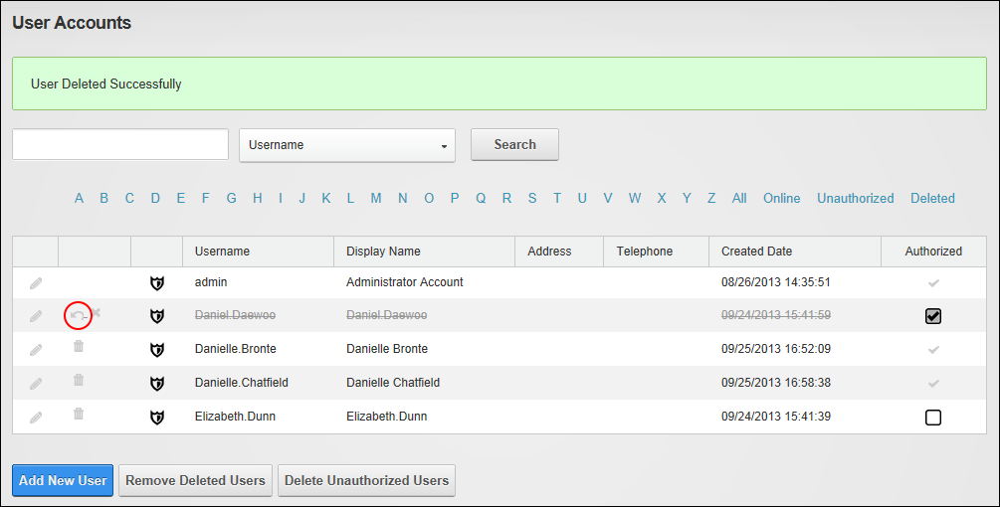

Restoring a Deleted User Account
How to restore a deleted user account using the User Accounts module.
- Navigate to Admin >
 User Accounts - OR - Go to a User Accounts module.
User Accounts - OR - Go to a User Accounts module.
- Find the user to be deleted using a filter or by searching.
- Click the Restore
 button beside their record.
button beside their record.

- Click the Yes button to confirm.